Smart Bundles is an Amazon Fresh concept that helps households reduce food waste with customizable grocery bundles and personalized portions. Designed in a 24-hour design sprint.
Design challenge
Design a climate-positive upgrade to an existing digital ecosystem.
For a 24-hour design sprint in Parsons’ Methods & Practices course, I chose Amazon Fresh as an existing digital ecosystem to explore how a climate-positive feature could reduce household food waste. I developed the concept from problem definition to prototype.
Problem
Grocery apps know what people buy, but not what they actually eat.
Amazon Fresh makes grocery shopping convenient, but standard package sizes don't always match household needs, and uneaten food never informs the next order.
Opportunity
How might we help households buy closer to what they'll actually eat, without requiring them to plan meals or change how they shop?
Solution
Right-sized grocery bundles that get better with every order.
Smart Bundles recommends customizable ingredient bundles and household-sized portions within Amazon Fresh, using optional post-purchase feedback to improve future suggestions.
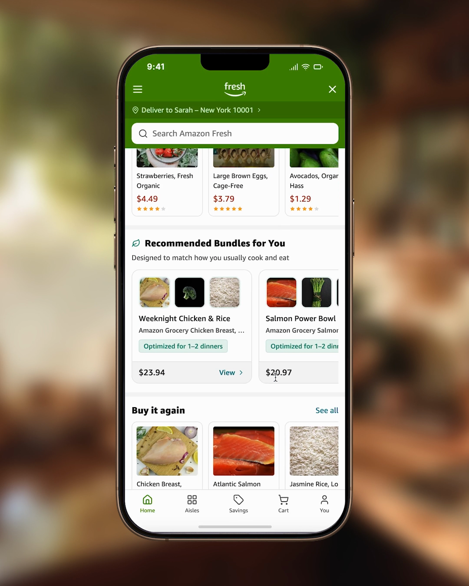

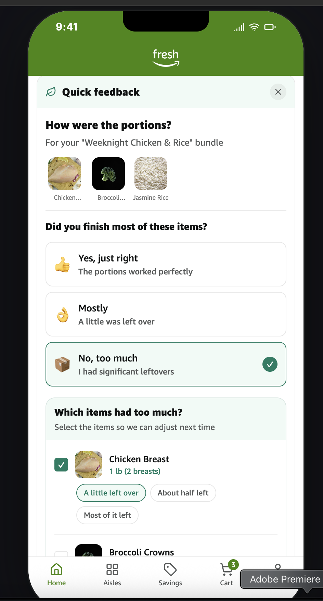

Discover
Find bundles based on shopping habits.
Customize
Adjust ingredients and portions.
Check in
Share optional feedback on what was eaten.
Improve
Refine future quantities using that feedback.
Core flows
From personalized bundles to smarter future orders
Discover
Find bundles based on what you buy.
Explore ingredient combinations recommended from shopping habits.
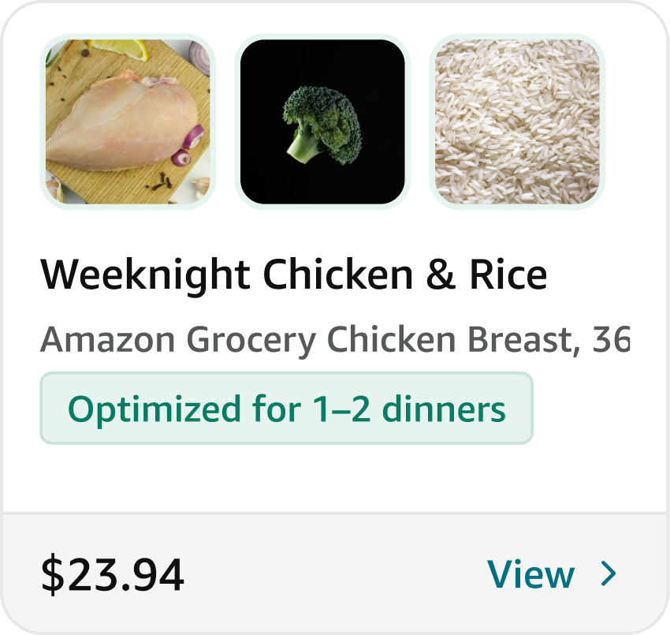
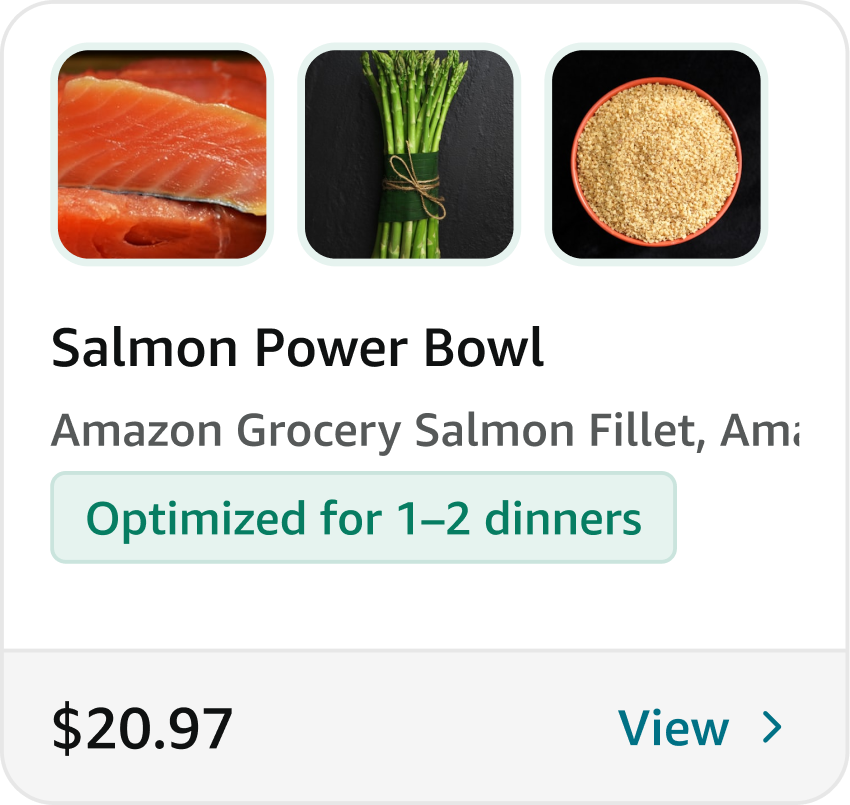
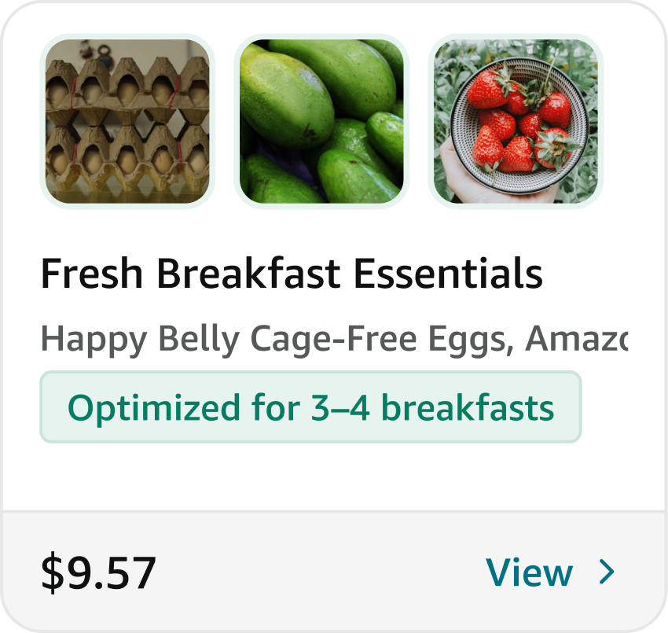
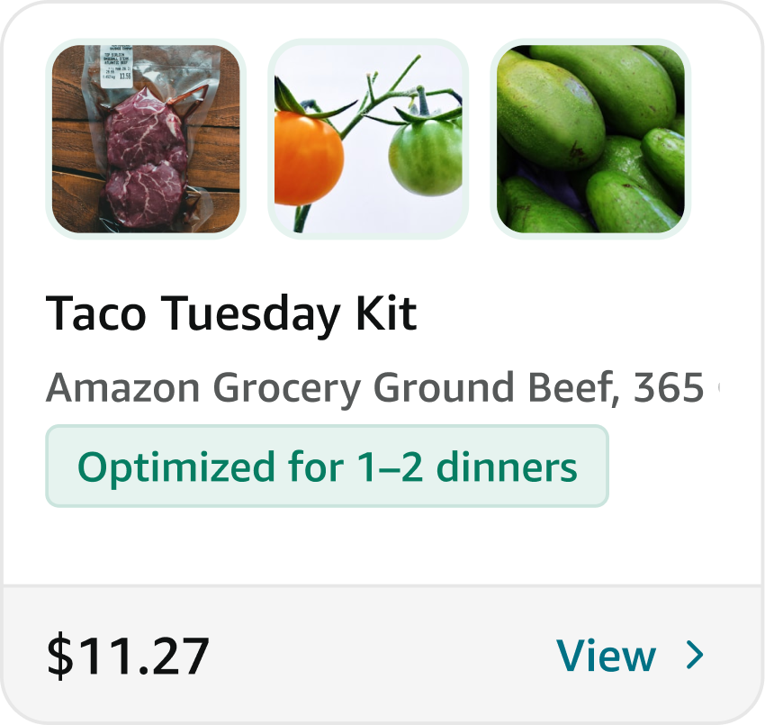
Personalize
Adjust portions before checkout.
Customize ingredients and quantities without changing how you shop.
Track
Follow the delivery.
Track the right-sized order through the existing Amazon Fresh delivery experience.
Correct
Help the next order fit better.
Share optional feedback on what was too much or too little to refine future suggestions.
Research
The shoppers wasting the most food are often the least likely to plan ahead.
Key demographics
Design for the shopper who doesn’t plan.
A study of approximately 1,000 U.S. households identified a high-waste segment of younger shoppers with limited planning habits, suggesting an opportunity for portion control without added effort.
- Portion control
- Food storage
- Meal planning
Past meal-kit solution
Amazon tried meal kits. A rigid, costly model sank them, not a lack of demand.
Amazon's previous meal-kit offering illustrated the appeal of pre-portioned ingredients, but fixed recipes and additional fulfillment requirements informed a more flexible approach.
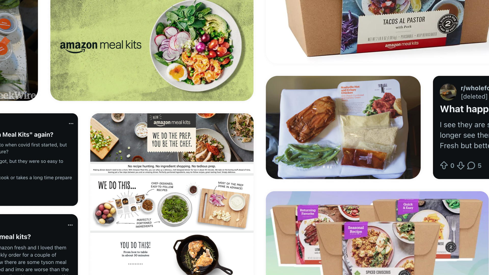
Why it matters, and why now
Food waste is costly, and grocery delivery offers an existing point of intervention.
Households account for a substantial share of U.S. food waste, while Amazon's existing grocery infrastructure offers a way to introduce portion recommendations into familiar shopping behavior.
of waste
now
Competitive analysis
Meal kits offer portion control; grocery apps offer flexibility. Neither consistently delivers both.
Smart Bundles combines adjustable portions with familiar grocery shopping, without fixed recipes or subscriptions.
Competitive positioning
Feature comparison
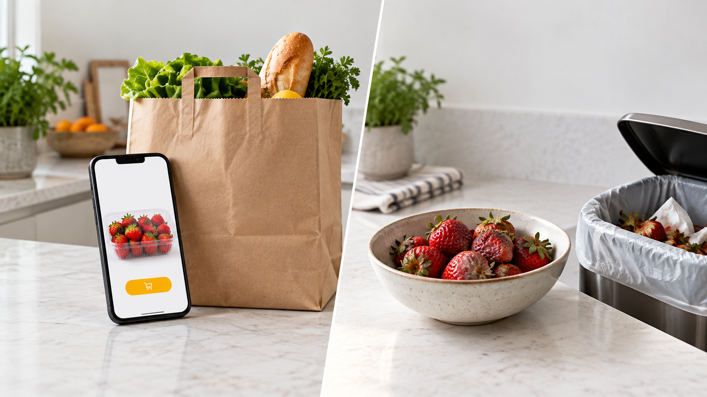
Grocery deliveryExplorations
Three approaches to making waste reduction effortless
I explored ordering individual meals with adjustable servings and bulk quantities, a recurring meal-kit subscription service, and adaptive grocery bundles within Amazon Fresh. I chose the approach that required the least change to existing shopping habits.
Benefit
Order by individual meal, choose serving sizes, and buy ingredients in bulk.
Tradeoff
Requires shoppers to choose meals and quantities upfront.
Benefit
A typical meal-kit service with recurring plans and scheduled deliveries.
Tradeoff
Introduces recurring purchases that may not match changing needs.
Benefit
Adapts appropriate quantities within existing shopping habits.
Tradeoff
Integrates portion control into existing shopping habits.
Design decisions
Reducing friction at three key moments in the shopping journey.
01
Surface bundles in the home feed, not a separate page.
I placed personalized bundle cards within Amazon Fresh's existing home feed, allowing shoppers to discover them alongside regular groceries without navigating to a new destination.
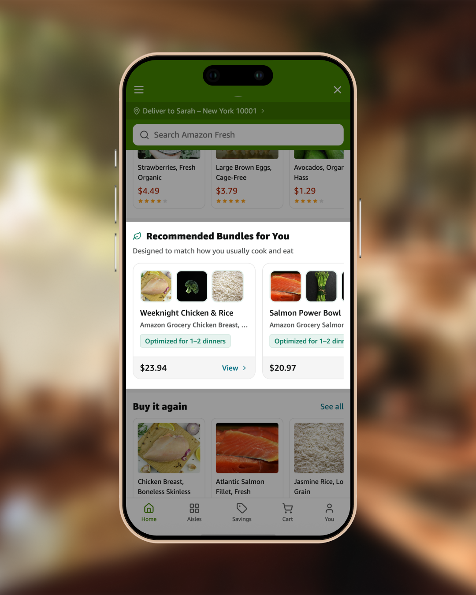
02
Keep portions pre-set, but editable until checkout.
Bundles arrive in the cart with recommended ingredient quantities to minimize decisions upfront, while allowing last-minute adjustments to individual portions without rebuilding the bundle.
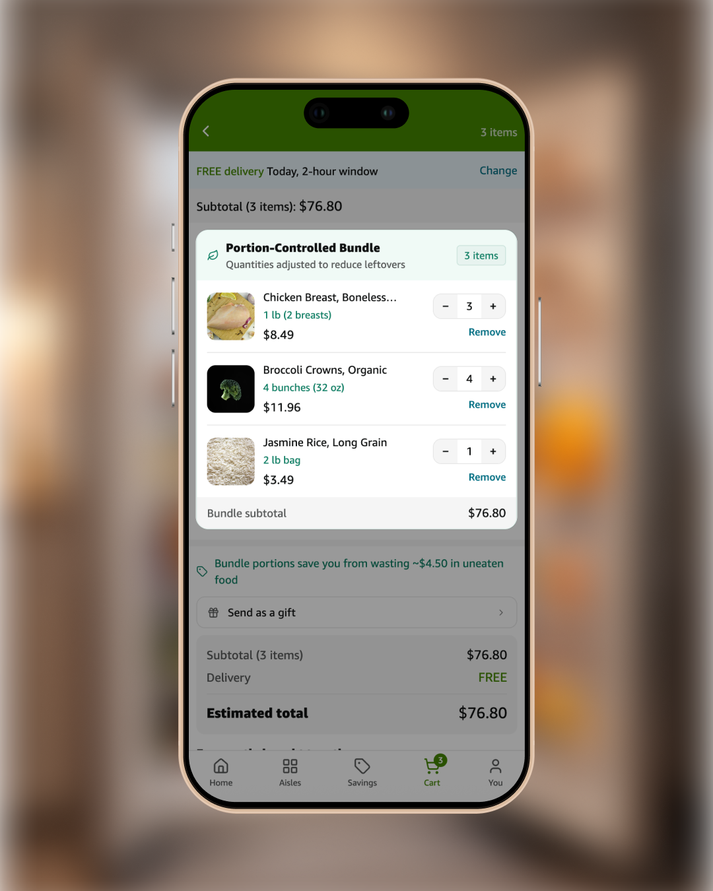
03
Capture ingredient-level feedback through progressive selections.
Rather than asking shoppers to describe what went uneaten, the check-in progressively narrows from overall portion fit to specific ingredients and leftover amounts, capturing actionable feedback for future adjustments.
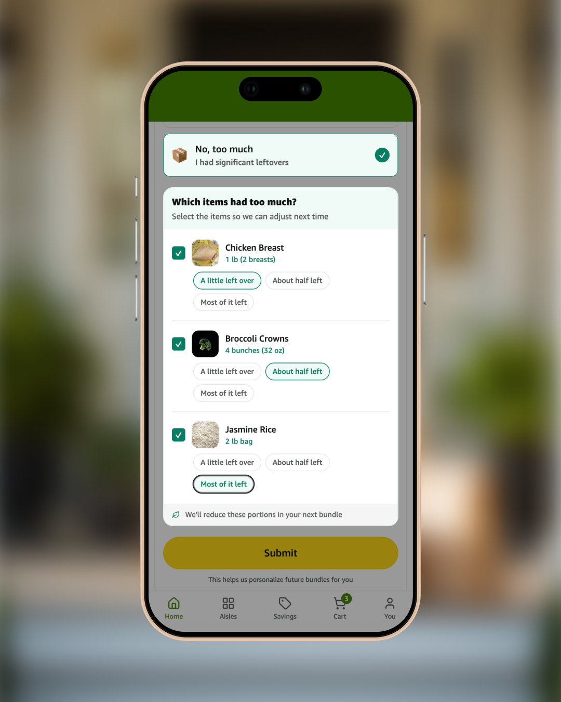
System design
The next order starts with what happened to the last one.
Smart Bundles uses optional consumption feedback to inform future quantities, turning individual purchases into an adaptive recommendation loop.
Ecosystem map
Changing what Fresh recommends, not how customers shop
The concept adjusts what Fresh recommends, how much shoppers buy, and what the system learns after delivery, without requiring a new shopping routine.
System impact
One right-sized order pays off four ways.
Next steps
Validate whether smarter quantities actually reduce food waste.
01
Test whether households buy and waste less.
Pilot Smart Bundles with real shoppers to measure quantity adjustments, leftover food, and repeat usage.
02
Find out whether shoppers will report what they eat.
Measure check-in participation and feedback accuracy to determine whether recommendations can improve reliably.
03
Expand only if the model proves useful.
Assess sustained waste reduction, customer retention, and operational feasibility before exploring other Amazon grocery services.
Reflection
A sustainable choice only works if it’s the easy one.
Smart Bundles was selected for Parsons' 2026 Digital Expression Fellowship, recognizing projects focused on environmental impact. See what I made for the fellowship ↗
Takeaway 01 · User behavior
Design around existing habits rather than expecting people to change them.
Takeaway 02 · Designing with AI
AI accelerated exploration, but identifying the right behavior to change still required human judgment.